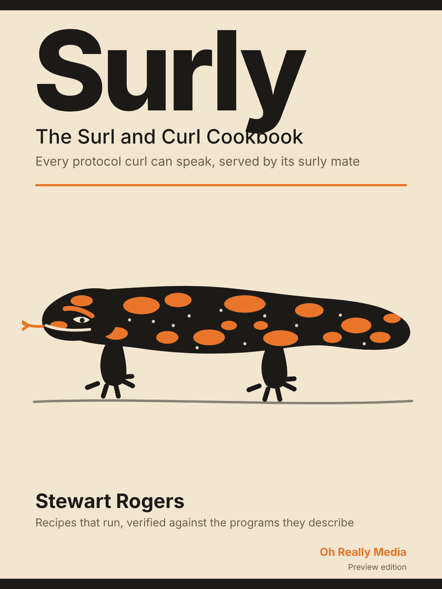

surl --directory site http://127.0.0.1:8080/ &
curl http://127.0.0.1:8080/hello.txtThe Surl and Curl Cookbook
A cookbook of network protocol recipes in which every example is a test that runs: a surl command that listens, a curl command that talks to it, and the proof printed beside the claim. Written to a published standard, verified against the open-source programs it describes, and built to be read by people and by machines.

Every recipe is two commands facing each other: a surl that listens and a curl that talks to it. Surl is the server-side mate of curl, answering every scheme curl can request; Curl is a drop-in replacement for the curl command-line tool. Both are open source, both written in C# on .NET 10 as a matched pair, so each recipe shows a protocol conversation from both ends. Hypertext Transfer Protocol, File Transfer Protocol, Secure Shell, the three mail protocols, WebSocket, Lightweight Directory Access Protocol, and the odd ones too.
A recipe is an executable specification. Every claim the text makes is a test case that is run against the two programs, and the book prints the result beside the claim. Nothing in it is asserted that was not proved.
Ordered by difficulty, not by protocol: serve one file first; Kerberos-authenticated mail over Transport Layer Security last. Open at any page; each recipe stands alone.
An index of every recipe, by key, problem, protocol, option and exit code, so an AI finds the one it needs and reads nothing else. The recipes' own test specifications double as a conformance suite for any port, in any language.
The first one, in full, with its checked claims. It is marked draft because the two programs have no release yet to verify it against; the mark changes by itself the day they do.
You have a folder of files and you want them reachable over plain Hypertext Transfer Protocol on your own machine, so a script or a test can fetch them, with nothing to install or configure.
Put a file in a directory, point surl at the directory, and fetch the file with curl:
surl --directory site http://127.0.0.1:8080/ &
curl http://127.0.0.1:8080/hello.txtsurl prints that it is listening, then curl prints what it got:
Listening on http://127.0.0.1:8080/
hello from surl| Draft: not yet verified against a released surl and curl. |
Stop surl with Ctrl+C.
surl takes the same shape of command line as curl, with one difference of meaning: where curl <url> names what to fetch, surl <url> names what to listen on. The scheme picks the protocol, http here; the host and port pick the bind address, 127.0.0.1:8080; the path is ignored for a listener.
--directory site is what makes this recipe serve anything. Without it, surl serves an empty in-memory store and every GET is answered 404 Not Found. With it, every file under site is served at its relative path, so site/hello.txt is http://127.0.0.1:8080/hello.txt. Files and folders whose names begin with a dot are never served, and .surl under the directory is reserved for the server’s own state.
Nothing here needs a login because no account is configured. The moment one is (see [http-require-a-login]), every request on this listener needs one. That is the server being surly on purpose: it is secure by default, and every recipe that loosens that prints a warning on start.
A path that is not there gets 404; curl reports the status with -w "%{http_code}", sends the body to nowhere with -o, and stays quiet with -s. It exits 0 anyway, because to curl a 404 is a successful conversation, unless -f asks it to fail on an error status, when it exits 22.
| Claim | Command | Result | |
|---|---|---|---|
· |
A path that is not there is answered 404 Not Found, and curl still exits 0 unless -f was given. |
|
exit 0, prints |
· |
With -f, curl exits 22 on that 404 instead. |
|
exit 22 |
· |
A file whose name begins with a dot is never served, even though it is in the directory. |
|
exit 0, prints |
[http-require-a-login] for putting an account in front of this listener.
[https-serve-with-a-self-signed-certificate] for the same recipe over Transport Layer Security.
The book is written and maintained over a twenty-year horizon by an unattended production line of AI agents, working from a published standard: a recipe schema, three gates (shape, truth, review) that nothing passes without, and a written default for every decision so that work never waits. The author sets direction and accepts or sends back each recipe; nothing is published without that line. Every decision and its reasons are in the repository.